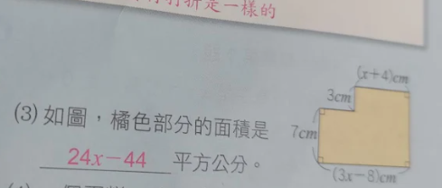
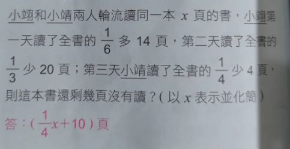

1. 如圖，橘色部分的面積是 ? 平方公分。

圖中標示的長度：
- 左側垂直邊長：7cm
- 底部水平邊長：(3x−8)cm
- 右上水平邊長：(x+4)cm
- 中間連接的垂直小邊長：3cm
答案：
橘色部分的面積是 24x−44 平方公分。
2. 小翊和小靖兩人輪流讀同一本 x 頁的書，小翊第一天讀了全書的 61 多 14 頁，第二天讀了全書的 31 少 20 頁；第三天小靖讀了全書的 41 少 4 頁，則這本書還剩幾頁沒有讀？(以 x 表示並化簡)

- 重點提示： 將所有包含 x 的分數項 (61x,31x,41x) 進行通分
答：(41x+10) 頁
1. 二位數問題 十位數, 個位數
- 題目內容： 有一個二位數，其數字和是 8。如果將其十位數和個位數對調之後，新數比原數大 18。
- 重點提示： 需使用位值原理：數值等於十位數 ×10 加上個位數 ×1。
- 最終列式： 80−9x=(9x+8)+18。
2. 人數分組與麵包分配問題
- 題目內容： 全班共有 34 位同學。男生一個人吃 2 個麵包，女生兩個人合吃 1 個麵包。總共吃掉了 40 個麵包。
- 重點提示： 數量關係式是：男生吃掉的麵包數 + 女生吃掉的麵包數 = 總麵包數。
- 最終列式： 2x+21(34−x)=40。
3. 測驗計分與倒扣問題
- 題目內容： 數學測驗總共 20 題。答對一題得 5 分，答錯一題扣 3 分。若總共答了 18 題，得了 66 分。
- 重點提示： 總分公式為：答對題數 × 得分 − 答錯題數 × 扣分 = 總得分。
- 最終列式： (18−x)×5−x×3=66。
4. 竹竿長度問題
- 題目內容： 已知一根木竿插入水中，沒入水中的部分是露出水面部分的 21。竹竿全長是 10 公尺。
- 重點提示： 核心觀念是：露出部分長度 + 沒入部分長度 = 全長。
- 最終列式： x+21x=10。
5. 混合液體與濃度問題
- 題目內容： 某酒精水混合液若干公升，其中酒精佔了 80%。如果加入了 15 公升的水，酒精變成佔全部的 60%。
* 重點提示： 解題公式為：全體 × 比率 = 部分（酒精量）。此題中，酒精量在加水前後維持不變。
- 最終列式： x+150.8x=0.6。
6. 面積相等問題
- 題目內容： 郭如將一張正方形紙片，先剪去寬為 3 公分的長條。再從剩下的紙片上，沿著平行短邊的方向剪去一條寬為 4 公分的長條。結果這兩次剪下來的面積都一樣。
* 重點提示： 面積公式為：面積 = 長 × 寬。
- 最終列式： 3x=4(x−3)。